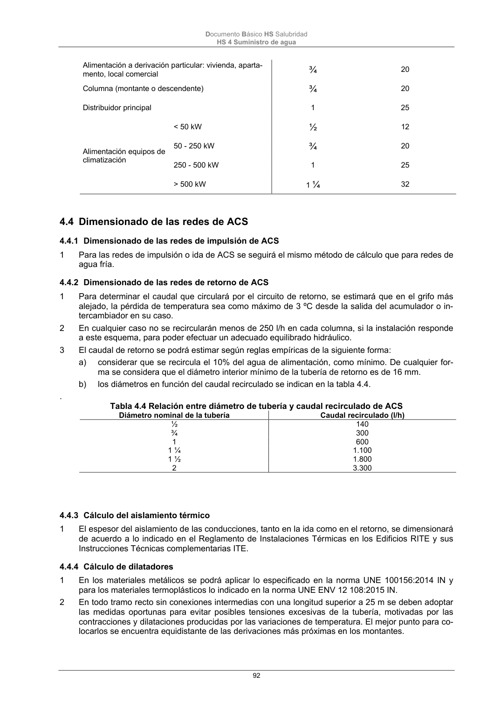

DB-HS · 4.4.4 Cálculo de dilatadores · versión 2022-06-14 · capa oficial
Formatos: JSON compacto · Markdown · PDF fuente
Ámbito del documento · texto del ámbito · documento y tablas
ID técnico a0215 · PDF pág. 92-93 · jerarquía no validada por persona · contrastado con el literal de la página 92 (candidato tipográfico); no validado por persona · padre: raíz
4.4.4 Cálculo de dilatadores 1 En los materiales metálicos se podrá aplicar lo especificado en la norma UNE 100156:2014 IN y para los materiales termoplásticos lo indicado en la norma UNE ENV 12 108:2015 IN. 2 En todo tramo recto sin conexiones intermedias con una longitud superior a 25 m se deben adoptar las medidas oportunas para evitar posibles tensiones excesivas de la tubería, motivadas por las contracciones y dilataciones producidas por las variaciones de temperatura. El mejor punto para co- locarlos se encuentra equidistante de las derivaciones más próximas en los montantes. Documento Básico HS Salubridad HS 4 Suministro de agua 93

PDF fuente redistribuible: copia fiel enlazada en esta página (SHA256 verificado).